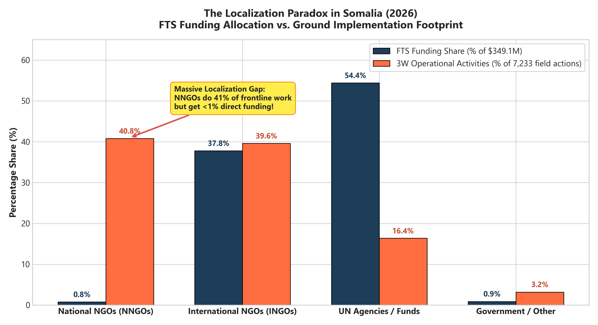
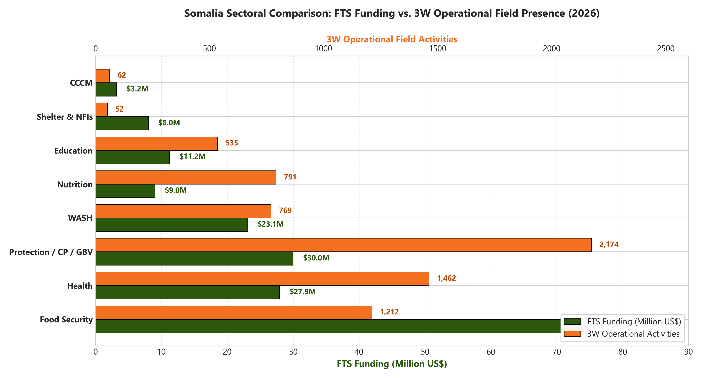
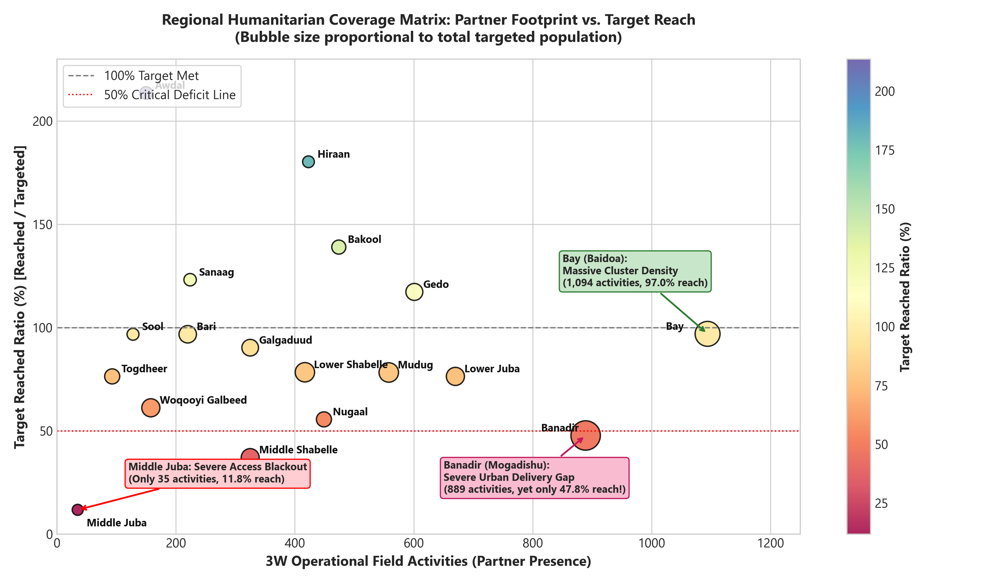
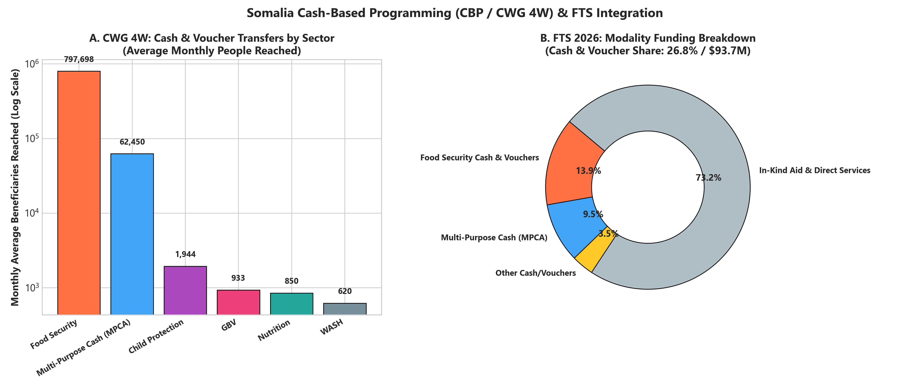
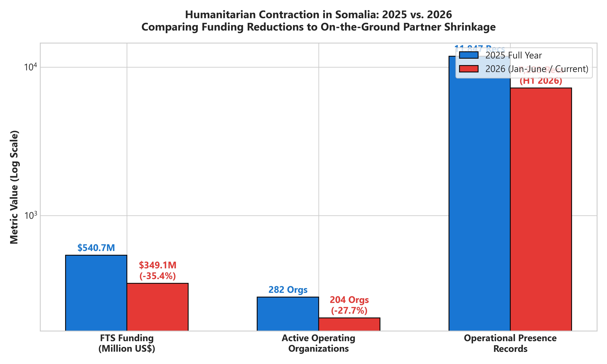

Rigorous comparative analysis of UN OCHA Financial Tracking Service (FTS) funding vs. HDX Operational Presence (3W: Who does What, Where, When), Target vs. Reached populations, and Cash-Based Programming (CWG 4W) across all 18 regions and 74 districts.
A fundamental debate in global humanitarian policy centers on the Grand Bargain commitment to channel at least 25% of humanitarian funding as directly as possible to local and national responders. Comparing Somalia's 2026 FTS funding database with the OCHA 3W operational presence reveals an acute disconnect between financial flows and frontline physical delivery.

| Actor Category | FTS Funding ($) | FTS Share | 3W Activities | 3W Share |
|---|---|---|---|---|
| National NGOs (NNGOs) | $2,810,088 | 0.80% | 2,952 | 40.81% |
| International NGOs (INGOs) | $125,939,941 | 36.08% | 2,863 | 39.58% |
| UN Agencies & Pooled Funds | $189,614,858 | 54.32% | 1,183 | 16.36% |
| Government Entities | $3,258,945 | 0.93% | 222 | 3.07% |
| Red Cross / Other | $27,443,407 | 7.86% | 13 | 0.18% |
Local Somali NGOs execute 40.8% of all physical field operations across 90 districts—more than any other actor category. Yet they receive only $2.81 million (0.80%) in direct funding. UN agencies receive 54.3% of all financial resources while executing just 16.4% of direct ground operations. This demonstrates that frontline implementation is largely sub-contracted downstream through multi-tiered overhead structures.
Comparing the dollar value allocated in FTS with the number of operating humanitarian partners in 3W highlights major variations in capital intensity and operational distribution across humanitarian clusters.

Health possesses the largest field operational presence in Somalia with 1,462 activities across 55 distinct organizations, yet receives only $27.9M ($19,110 per field activity). In contrast, Food Security commands $73.8M with 1,212 field activities ($60,920 per activity)—reflecting the high cost of food procurement and large-scale bulk commodity distribution compared to clinical outpatient staffing.
Protection clusters (Child Protection: 909 activities, GBV: 684 activities, General Protection: 581 activities) represent 2,174 combined operations across 84 unique partners. Despite representing nearly 30% of all field activities, protection sectors capture less than $30M in FTS funding ($13,799 per activity), demonstrating intense reliance on low-cost community-based local volunteers.
By linking the 3W operational partner footprint with the official UN OCHA People Targeted vs. Reached Monitoring Matrix across all 18 administrative regions, we expose severe geographic delivery imbalances.

Middle Juba suffers from near-total operational neglect. Only 35 activities by 7 organizations operate in the region. Out of ~180,000 targeted people in acute need, only 11.8% were reached due to active conflict and territorial access denial.
Banadir (Mogadishu) hosts 889 activities across 68 organizations. Yet, it achieved a reach ratio of only 47.8% (617,072 reached of 1.29M targeted). High agency density does not translate into proportional delivery due to severe IDP camp fragmentation, gatekeeper exploitation, and rapid secondary evictions.
Bay dominates the country with 1,094 activities and 84 unique operating organizations, achieving a 97.0% reach ratio (899,979 reached of 927,370 targeted). Baidoa remains the operational nexus of the international humanitarian response.
| Region | 3W Activities | Active Orgs | Districts | Affected Pop. | Target Pop. | Reached Pop. | Coverage (%) |
|---|---|---|---|---|---|---|---|
| Bay | 1,094 | 84 orgs | 5 | 894,023 | 927,370 | 899,979 | 97.0% |
| Banadir | 889 | 68 orgs | 17 | 1,242,175 | 1,290,596 | 617,072 | 47.8% |
| Lower Juba | 670 | 53 orgs | 4 | 490,054 | 465,389 | 355,437 | 76.4% |
| Gedo | 601 | 49 orgs | 6 | 429,228 | 395,225 | 463,483 | 117.3% |
| Mudug | 558 | 34 orgs | 5 | 694,511 | 567,351 | 444,085 | 78.3% |
| Bakool | 474 | 40 orgs | 5 | 295,667 | 263,726 | 366,503 | 139.0% |
| Nugaal | 449 | 17 orgs | 3 | 339,697 | 248,633 | 138,258 | 55.6% |
| Hiraan | 423 | 50 orgs | 4 | 205,992 | 188,532 | 339,940 | 180.3% |
| Lower Shabelle | 417 | 41 orgs | 8 | 647,359 | 560,722 | 439,623 | 78.4% |
| Galgaduud | 325 | 28 orgs | 5 | 414,112 | 376,497 | 340,101 | 90.3% |
| Middle Shabelle | 325 | 39 orgs | 5 | 450,399 | 483,960 | 179,445 | 37.1% |
| Sanaag | 224 | 18 orgs | 3 | 229,755 | 183,624 | 226,268 | 123.2% |
| Bari | 220 | 20 orgs | 7 | 454,000 | 419,036 | 405,451 | 96.8% |
| Woqooyi Galbeed | 158 | 21 orgs | 4 | 491,293 | 411,842 | 252,221 | 61.2% |
| Awdal | 150 | 14 orgs | 4 | 240,580 | 201,011 | 429,285 | 213.6% |
| Sool | 128 | 21 orgs | 4 | 211,873 | 179,880 | 174,162 | 96.8% |
| Togdheer | 93 | 17 orgs | 4 | 339,944 | 311,958 | 238,210 | 76.4% |
| Middle Juba | 35 | 7 orgs | 4 | 179,640 | 162,282 | 19,214 | 11.8% |
Somalia's sophisticated mobile money ecosystem (Hormuud EVC Plus, Telesom ZAAD, Golis Sahal) has made Cash and Voucher Assistance (CVA) the most cost-effective frontline modality. We contrast the Cash Working Group (CWG) 4W monthly tracker against FTS modality tracking.

The CWG 4W tracker confirms that Food Security CVA represents >90% of all cash disbursements, reaching an average of 797,698 individuals per month. Multi-Purpose Cash Assistance (MPCA) reaches an additional 62,450 individuals monthly across 74 districts.
In FTS 2026, cash and voucher modalities total $93.7 million (26.8% of total tracked funding), including $48.5M in Food Security cash transfers and $33.0M in explicit Multipurpose Cash (MPCA). This provides direct purchasing power in local markets amidst high food price inflation.
The global funding decline has had immediate operational consequences on the humanitarian footprint across Somalia.

The withdrawal of 78 organizations has disproportionately affected remote frontline communities. As budgets contracted, international agencies retreated to central fortified hubs (Mogadishu, Baidoa, Kismayo), leaving peripheral districts with zero or minimal operational presence.
Interactive real-time database merging the 74 monitored districts with OCHA Operational Priority Areas (OPA 1, 2, 3), Affected populations, Target vs Reached figures, and active 3W partner counts.
| Region | District | OPA Priority | Affected Pop. | Target Pop. | Reached Pop. | Reach Ratio (%) | Active Partners (3W) | 3W Field Actions |
|---|---|---|---|---|---|---|---|---|
| Awdal | Baki | OPA 3 (Moderate) | 25,641 | 19,014 | 20,694 | 108.8% | 3 | 72 |
| Awdal | Borama | OPA 3 (Moderate) | 137,007 | 109,510 | 55,878 | 51.0% | 12 | 41 |
| Awdal | Lughaye | OPA 3 (Moderate) | 40,066 | 34,747 | 10,678 | 30.7% | 4 | 22 |
| Awdal | Zeylac | OPA 3 (Moderate) | 37,866 | 37,740 | 342,035 | 906.3% | 7 | 15 |
| Bakool | Ceel Barde | OPA 1 (Extreme) | 35,207 | 24,537 | 52,457 | 213.8% | 10 | 69 |
| Bakool | Rab Dhuure | OPA 2 (Severe) | 42,532 | 40,570 | 102,746 | 253.3% | 5 | 30 |
| Bakool | Tayeeglow | OPA 2 (Severe) | 91,532 | 91,532 | 12,760 | 13.9% | 11 | 37 |
| Bakool | Waajid | OPA 1 (Extreme) | 54,329 | 46,207 | 74,033 | 160.2% | 23 | 125 |
| Bakool | Xudur | OPA 1 (Extreme) | 72,067 | 60,880 | 124,507 | 204.5% | 25 | 214 |
| Banadir | Banadir | OPA 1 (Extreme) | 1,242,175 | 1,290,596 | 617,072 | 47.8% | 0 | 0 |
| Bari | Bandarbeyla | OPA 3 (Moderate) | 20,881 | 18,338 | 22,990 | 125.4% | 3 | 13 |
| Bari | Bossaso | OPA 1 (Extreme) | 269,323 | 259,341 | 202,457 | 78.1% | 15 | 70 |
| Bari | Caluula | OPA 3 (Moderate) | 37,036 | 36,632 | 26,694 | 72.9% | 2 | 9 |
| Bari | Iskushuban | OPA 3 (Moderate) | 33,537 | 30,706 | 43,092 | 140.3% | 6 | 72 |
| Bari | Qandala | OPA 3 (Moderate) | 27,212 | 27,212 | 29,741 | 109.3% | 4 | 15 |
| Bari | Qardho | OPA 3 (Moderate) | 66,011 | 46,807 | 80,477 | 171.9% | 11 | 40 |
| Bay | Baydhaba | OPA 1 (Extreme) | 527,419 | 573,139 | 570,585 | 99.6% | 69 | 571 |
| Bay | Buur Hakaba | OPA 1 (Extreme) | 156,377 | 156,493 | 189,156 | 120.9% | 21 | 125 |
| Bay | Diinsoor | OPA 1 (Extreme) | 111,475 | 87,379 | 50,730 | 58.1% | 28 | 208 |
| Bay | Qansax Dheere | OPA 1 (Extreme) | 98,752 | 110,359 | 89,508 | 81.1% | 26 | 189 |
| Galgaduud | Cabudwaaq | OPA 2 (Severe) | 112,050 | 118,159 | 120,355 | 101.9% | 13 | 68 |
| Galgaduud | Cadaado | OPA 2 (Severe) | 66,828 | 65,398 | 57,959 | 88.6% | 15 | 118 |
| Galgaduud | Ceel Buur | OPA 2 (Severe) | 60,672 | 53,002 | 30,834 | 58.2% | 4 | 12 |
| Galgaduud | Ceel Dheer | OPA 2 (Severe) | 57,345 | 34,784 | 15,724 | 45.2% | 8 | 22 |
| Galgaduud | Dhuusamarreeb | OPA 1 (Extreme) | 117,217 | 105,154 | 115,229 | 109.6% | 19 | 105 |
| Gedo | Baardheere | OPA 2 (Severe) | 89,566 | 97,215 | 141,319 | 145.4% | 21 | 116 |
| Gedo | Belet Xaawo | OPA 2 (Severe) | 68,178 | 49,340 | 68,530 | 138.9% | 16 | 106 |
| Gedo | Ceel Waaq | OPA 3 (Moderate) | 41,378 | 37,640 | 26,916 | 71.5% | 13 | 54 |
| Gedo | Doolow | OPA 1 (Extreme) | 99,523 | 98,820 | 119,842 | 121.3% | 20 | 148 |
| Gedo | Garbahaarey | OPA 2 (Severe) | 60,595 | 47,707 | 33,078 | 69.3% | 8 | 54 |
| Gedo | Luuq | OPA 2 (Severe) | 69,988 | 64,503 | 73,798 | 114.4% | 19 | 123 |
| Hiraan | Belet Weyne | OPA 1 (Extreme) | 137,642 | 130,218 | 202,814 | 155.7% | 47 | 324 |
| Hiraan | Bulo Burto | OPA 2 (Severe) | 40,032 | 34,069 | 45,762 | 134.3% | 14 | 80 |
| Hiraan | Jalalaqsi | OPA 2 (Severe) | 28,318 | 24,245 | 91,364 | 376.8% | 6 | 17 |
| Lower Juba | Afmadow | OPA 1 (Extreme) | 138,224 | 105,473 | 76,041 | 72.1% | 26 | 210 |
| Lower Juba | Badhaadhe | OPA 3 (Moderate) | 32,788 | 23,033 | 36,251 | 157.4% | 11 | 37 |
| Lower Juba | Jamaame | OPA 2 (Severe) | 174,270 | 206,204 | 17,579 | 8.5% | 21 | 65 |
| Lower Juba | Kismaayo | OPA 2 (Severe) | 144,772 | 130,679 | 225,566 | 172.6% | 43 | 360 |
| Lower Shabelle | Afgooye | OPA 1 (Extreme) | 214,057 | 171,784 | 56,539 | 32.9% | 33 | 186 |
| Lower Shabelle | Baraawe | OPA 3 (Moderate) | 27,500 | 18,536 | 126,474 | 682.3% | 11 | 38 |
| Lower Shabelle | Kurtunwaarey | OPA 3 (Moderate) | 36,059 | 31,883 | 42,056 | 131.9% | 6 | 27 |
| Lower Shabelle | Marka | OPA 3 (Moderate) | 118,855 | 97,822 | 76,246 | 77.9% | 12 | 61 |
| Lower Shabelle | Qoryooley | OPA 3 (Moderate) | 72,788 | 68,019 | 75,640 | 111.2% | 10 | 55 |
| Lower Shabelle | Sablaale | OPA 3 (Moderate) | 28,432 | 22,659 | 2,196 | 9.7% | 2 | 7 |
| Lower Shabelle | Wanla Weyn | OPA 2 (Severe) | 149,668 | 150,019 | 60,472 | 40.3% | 10 | 42 |
| Middle Juba | Bu'aale | OPA 2 (Severe) | 56,107 | 56,107 | 14,877 | 26.5% | 6 | 23 |
| Middle Juba | Jilib | OPA 3 (Moderate) | 67,812 | 67,812 | 2,141 | 3.2% | 3 | 10 |
| Middle Juba | Saakow | OPA 2 (Severe) | 55,721 | 38,363 | 2,196 | 5.7% | 1 | 1 |
| Middle Shabelle | Adan Yabaal | OPA 2 (Severe) | 36,980 | 36,569 | 16,541 | 45.2% | 4 | 6 |
| Middle Shabelle | Balcad | OPA 2 (Severe) | 177,685 | 206,161 | 76,456 | 37.1% | 19 | 98 |
| Middle Shabelle | Cadale | OPA 2 (Severe) | 41,229 | 37,551 | 48,524 | 129.2% | 7 | 40 |
| Middle Shabelle | Jowhar | OPA 1 (Extreme) | 194,505 | 203,679 | 37,924 | 18.6% | 30 | 180 |
| Mudug | Gaalkacyo | OPA 2 (Severe) | 353,380 | 243,188 | 225,966 | 92.9% | 30 | 366 |
| Mudug | Galdogob | OPA 1 (Extreme) | 88,944 | 90,773 | 56,842 | 62.6% | 10 | 45 |
| Mudug | Hobyo | OPA 2 (Severe) | 107,517 | 106,759 | 93,706 | 87.8% | 14 | 70 |
| Mudug | Jariiban | OPA 1 (Extreme) | 112,433 | 99,882 | 50,633 | 50.7% | 8 | 59 |
| Mudug | Xarardheere | OPA 3 (Moderate) | 32,237 | 26,749 | 16,938 | 63.3% | 7 | 19 |
| Nugaal | Burtinle | OPA 2 (Severe) | 65,380 | 43,337 | 46,473 | 107.2% | 8 | 65 |
| Nugaal | Eyl | OPA 2 (Severe) | 99,808 | 90,839 | 37,242 | 41.0% | 5 | 83 |
| Nugaal | Garoowe | OPA 1 (Extreme) | 174,509 | 114,457 | 54,543 | 47.7% | 15 | 301 |
| Sanaag | Ceel Afweyn | OPA 2 (Severe) | 46,915 | 32,228 | 64,041 | 198.7% | 6 | 20 |
| Sanaag | Ceerigaabo | OPA 2 (Severe) | 92,896 | 75,450 | 93,393 | 123.8% | 17 | 164 |
| Sanaag | Laasqoray | OPA 2 (Severe) | 89,944 | 75,946 | 68,834 | 90.6% | 8 | 40 |
| Sool | Caynabo | OPA 3 (Moderate) | 37,059 | 31,558 | 22,630 | 71.7% | 11 | 30 |
| Sool | Laas Caanood | OPA 2 (Severe) | 107,154 | 92,162 | 106,124 | 115.1% | 15 | 75 |
| Sool | Taleex | OPA 2 (Severe) | 31,615 | 30,303 | 27,408 | 90.4% | 4 | 15 |
| Sool | Xudun | OPA 2 (Severe) | 36,045 | 25,857 | 18,000 | 69.6% | 3 | 8 |
| Togdheer | Burco | OPA 2 (Severe) | 195,324 | 178,157 | 118,343 | 66.4% | 15 | 68 |
| Togdheer | Buuhoodle | OPA 2 (Severe) | 41,828 | 48,312 | 39,420 | 81.6% | 3 | 10 |
| Togdheer | Owdweyne | OPA 2 (Severe) | 44,126 | 44,373 | 64,955 | 146.4% | 4 | 10 |
| Togdheer | Sheikh | OPA 3 (Moderate) | 58,666 | 41,116 | 15,492 | 37.7% | 5 | 13 |
| Woqooyi Galbeed | Berbera | OPA 3 (Moderate) | 67,664 | 50,967 | 22,456 | 44.1% | 7 | 20 |
| Woqooyi Galbeed | Gebiley | OPA 3 (Moderate) | 92,273 | 75,399 | 20,778 | 27.6% | 7 | 26 |
| Woqooyi Galbeed | Hargeysa | OPA 3 (Moderate) | 331,356 | 285,476 | 208,987 | 73.2% | 20 | 104 |